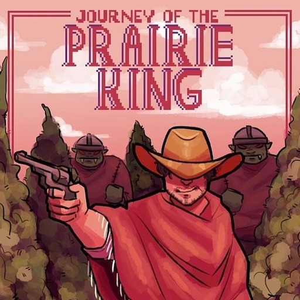

Creditos
Desenvolvido por Henrique Teixeira, Highnoon foi inspirado em um minigame do jogo Stardew Valley chamado "Journey of the praire king"

Os sprites de Highnoon foram diretamente retirados de lá e pertencem ao artista e desenvolvdor Eric Barone